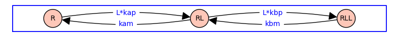
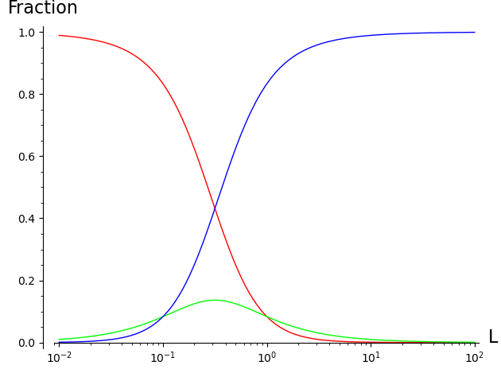
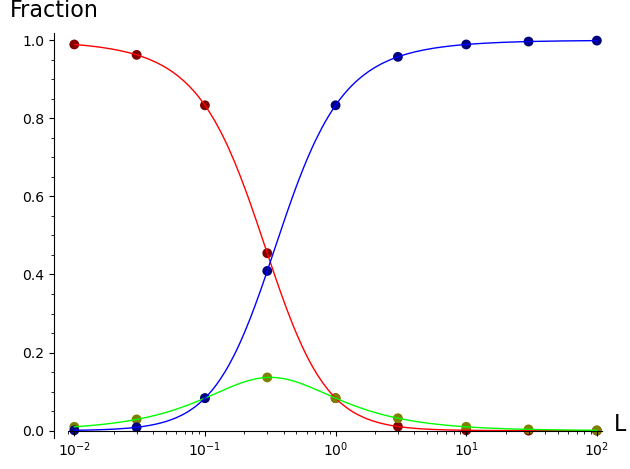
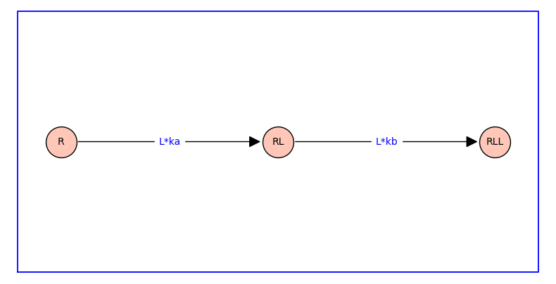

Ligand binding#
Usually one or more of the transitions in receptor model involve ligand binding. For example, consider a receptor model with two sequential ligand binding transitions.
var('R RL RLL L kap kam kbp kbm')
G = DiGraph({R: {RL:kap*L}, RL: {R:kam, RLL:kbp*L}, RLL: {RL:kbm}})
pos = {R: (0, 0), RL: (2, 0), RLL: (4, 0)}
G.plot(figsize=8,edge_labels=True,pos=pos,graph_border=True,vertex_size=1000)

This state-transition diagram has the topology of a symmetric directed path graph on 3 vertices. It can be shown that the steady-state fraction of receptors in each of these three states is given by
z_R = kam*kbm; z_RL = kap*L*kbm; z_RLL = kap*L*kbp*L
z_T = z_R+z_RL+z_RLL
R = z_R/z_T; RL = z_RL/z_T; RLL = z_RLL/z_T
print('R =',R); print('RL =',RL); print('RLL =',RLL)
R = kam*kbm/(L^2*kap*kbp + L*kap*kbm + kam*kbm)
RL = L*kap*kbm/(L^2*kap*kbp + L*kap*kbm + kam*kbm)
RLL = L^2*kap*kbp/(L^2*kap*kbp + L*kap*kbm + kam*kbm)
Next we substitute values for the four rate constants and plot the resulting binding curve(s). Each binding curve gives the fraction of receptors in a particular state (R, RL, RLL) as a function of ligand concentration (L)
params = {kap:1,kam:1,kbp:10,kbm:1}
R = R.subs(params); RL = RL.subs(params); RLL = RLL.subs(params)
print('R =',R); print('RL =',RL); print('RLL =',RLL)
Lmin=0.01; Lmax=100;
pR = plot_semilogx(R, (L, Lmin, Lmax), rgbcolor=(1,0,0))
pRL = plot_semilogx(RL, (L, Lmin, Lmax), rgbcolor=(0,1,0))
pRLL = plot_semilogx(RLL,(L, Lmin, Lmax), rgbcolor=(0,0,1), axes_labels=['L', 'Fraction'])
show(pR+pRL+pRLL)
R = 1/(10*L^2 + L + 1)
RL = L/(10*L^2 + L + 1)
RLL = 10*L^2/(10*L^2 + L + 1)

At low ligand concentration most receptors are in the unbound form (R, red). At high concentrations most receptors are in the doubly bound form (RLL, blue).
For any given ligand concentration, the fraction of receptors in each of the three states sums to 1.
solve(R+RL+RLL == 1,L)
[L == L]
Equilibrium association constants#
The receptor model presented above has the property that the fraction of receptors in each state satisfy detailed balance. As a consequence, the fraction of receptors in each state can be written in terms of the equilibrium association constants ka=kap/kam and kb=kbp/kbm.
To see this, divide the numberator and denominator of the expressions for R, RL, RLL by kam*kbm to obtain
var('ka kb')
z_R = 1; z_RL = ka*L; z_RLL = ka*L*kb*L; z_T = z_R+z_RL+z_RLL
R = z_R/z_T; RL = z_RL/z_T; RLL = z_RLL/z_T
print('R =',R,'','RL =',RL,'','RLL =',RLL)
R = 1/(L^2*ka*kb + L*ka + 1) RL = L*ka/(L^2*ka*kb + L*ka + 1) RLL = L^2*ka*kb/(L^2*ka*kb + L*ka + 1)
The filled circles on the plot below show that these expressions give the same three binding curves for R, RL, and RLL as a function of L.
params = {ka:1,kb:10}
R = R.subs(params); RL = RL.subs(params); RLL = RLL.subs(params)
print('R =',R); print('RL =',RL); print('RLL =',RLL)
X = [0.01,0.03,0.1,0.3,1,3,10,30,100]
vReq = [(x, R(L=x)) for x in X]
pReq = points(vReq, rgbcolor=(0.5,0,0), pointsize=50)
vRLeq = [(x, RL(L=x)) for x in X]
pRLeq = points(vRLeq, rgbcolor=(0.5,0.5,0), pointsize=50)
vRLLeq = [(x, RLL(L=x)) for x in X]
pRLLeq = points(vRLLeq, rgbcolor=(0,0,0.5), pointsize=50)
show(pR + pRL + pRLL + pReq + pRLeq + pRLLeq)
R = 1/(10*L^2 + L + 1)
RL = L/(10*L^2 + L + 1)
RLL = 10*L^2/(10*L^2 + L + 1)

Equilibrium binding curves and branchings#
Equilibrium binding curves can be compactly specified as a branching with association constants and ligand concentrations weighting the edges. The branching is essentially a rooted spanning tree with arrows reversed.
T = DiGraph({'R': {'RL':ka*L}, 'RL': {'RLL':kb*L}})
pos = {'R': (0, 0), 'RL': (2, 0), 'RLL': (4, 0)}
T.plot(figsize=8,edge_labels=True,pos=pos,graph_border=True,vertex_size=1000)

The arrows indicate the direction of the forward reaction. The labels on the arrow are equilibrium constants or the product of equilibrium association constant and ligand concentration.
The following section presents this viewpoint in detail.